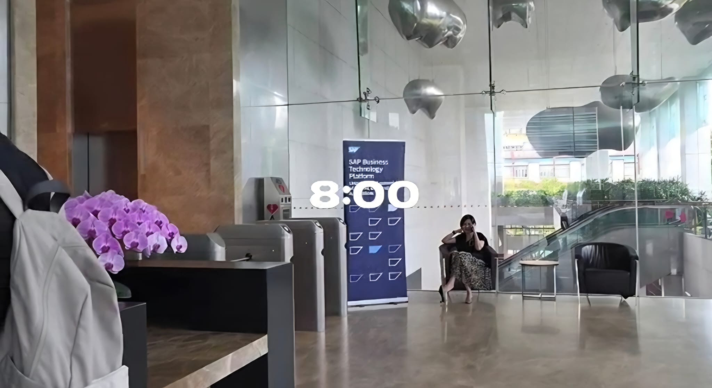
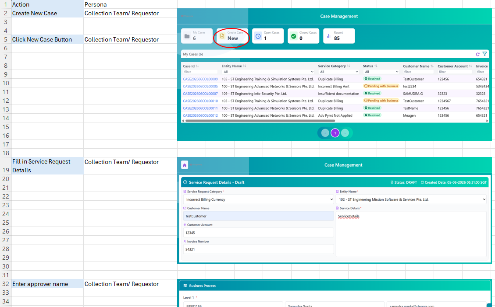
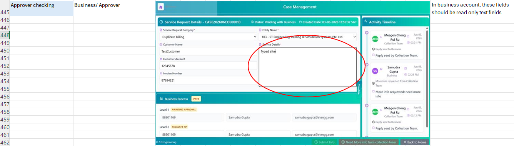
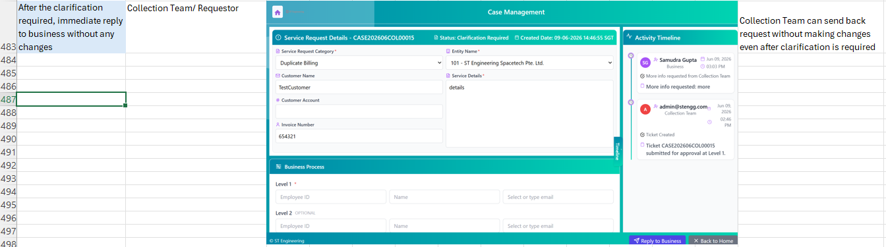
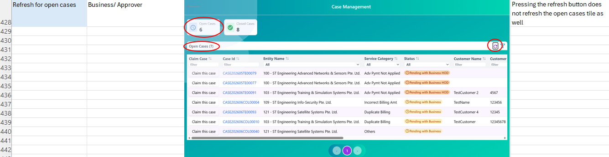
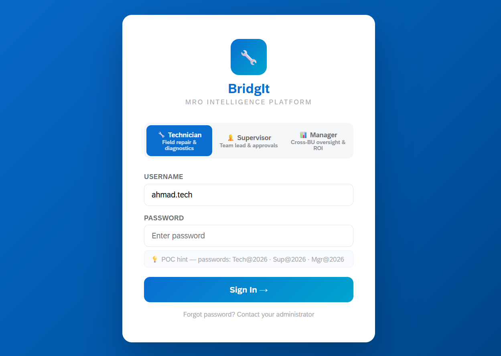
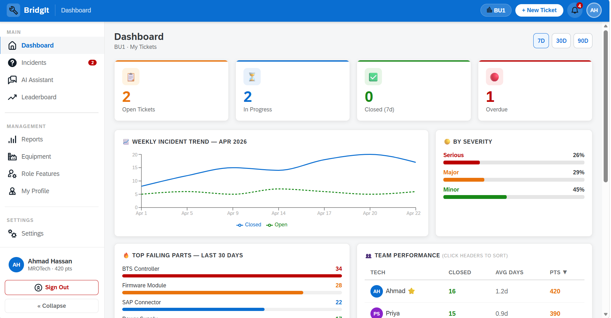
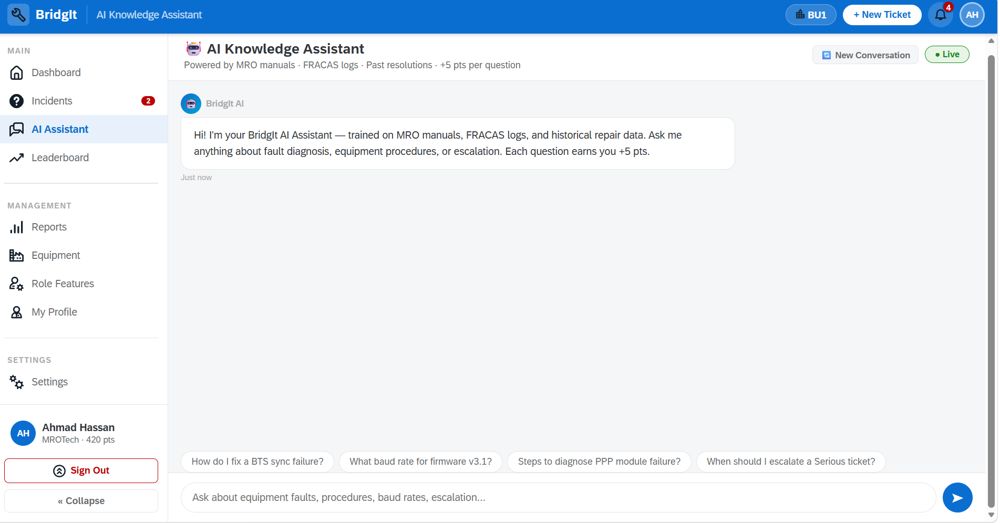
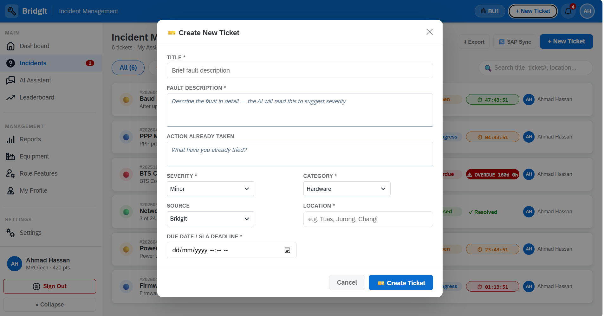

A Year 3 AAI student interning with the SAP BTP Team at ST Engineering, where I work across the frontend, backend, and AI layers of an enterprise maintenance platform — and spend the rest of my time chasing down bugs before they reach production.
The SAP BTP Team designs, develops and maintains internal enterprise applications that simplify processes across different departments. The team builds new digital solutions on SAP Business Technology Platform and integrates them with ST Engineering’s core SAP backend systems, allowing departments to access essential data, automate workflows and carry out their work more efficiently. I support two of the team’s active duties like quality assurance for an existing case management system and the full-stack development of a new AI-augmented maintenance platform.
My job scope involves supporting the team across learning, knowledge sharing and project development. I regularly self-learn new SAP technologies, attend workshops and training sessions, and share key takeaways with colleagues who were unable to participate. I also contribute to the development and testing of internal applications built on SAP BTP. One of the projects I am involved in is the development of an MRO intelligence platform that incorporates AI features to support maintenance-related processes and improve operational efficiency.
I attended a hands-on workshop covering three key SAP AI services: Joule Studio, which enables the creation and extension of AI-powered agents and skills within SAP environments; SAP AI Core, the managed runtime for hosting and orchestrating AI models; and SAP Document AI, which supports enterprise-grade document extraction and OCR.
Several colleagues weren't able to attend, so I put together and delivered a short internal presentation to bring them up to speed. This was my first time teaching technical material to working professionals rather than classmates.
Download my workshop presentation slides
SAP’s environment for creating and extending custom AI agents and skills that work within SAP applications. It allows developers to design conversational experiences that help users access information and complete business tasks more efficiently.
The managed layer for deploying, running and scaling AI models within SAP BTP, including access to large language models through SAP Generative AI Hub. This is particularly relevant to how BridgIt’s AI capabilities could be developed further.
An enterprise-grade service that uses OCR and AI to extract, classify and structure information from documents, reducing the need for manual data entry and processing.
Before the new case management system was released to clients, I conducted user-acceptance testing on the application developed by my colleagues. I tested each function and interface element against the intended requirements, documented any issues or inconsistencies, and provided feedback to help the team improve the system before deployment.
I documented the testing process in an Excel-based UAT sheet to ensure each test case was clear, consistent and traceable. For every scenario, I recorded the persona performing the test, the action carried out within the system, and a screenshot showing the result. This allowed the development team to understand how different users would interact with the application, verify whether each function behaved as intended, and identify areas that required improvement before the system was released to clients.




BridgIt is an enterprise maintenance platform for equipment servicing across ST Engineering's business units, replacing fragmented WhatsApp-and-spreadsheet workflows with a single role-aware system for technicians, supervisors, and managers.
My Contribution and Current Progress
I began by developing the complete frontend proof of concept using React and SAP UI5 Web Components across the Technician, Supervisor and Manager personas. After establishing the user experience and core workflows, I progressed to building the supporting backend services and deploying the application on SAP BTP.
So far, I have configured the BTP development environment, structured the project for deployment, implemented role-based authentication using XSUAA, and created persistent database entities in SAP HANA Cloud to replace the original mock data. The platform is still under active development, with further backend integration and several AI-powered features currently being designed and implemented.




Although the specific tasks changed throughout my internship, the foundation of my role remained consistent: learning unfamiliar technologies, applying them to real systems, checking that applications function correctly and communicating findings clearly to the team. At the beginning of the internship, my daily work focused mainly on self-learning and attending SAP workshops. I explored technologies such as SAP BTP, Joule Studio and SAP AI Core, reviewed technical documentation and tested what I had learnt. I also delivered knowledge-sharing sessions for colleagues who were unable to attend the workshops.
As the internship progressed, my daily responsibilities shifted towards user-acceptance testing and application development. For the case management project, I tested workflows from the perspectives of different user personas, checked whether the system followed the intended business rules and recorded issues using structured UAT sheets with actions, expected outcomes and screenshot evidence.
My current day-to-day work focuses more heavily on BridgIt, an AI-augmented MRO platform. This includes developing and reviewing frontend and backend components, troubleshooting issues and considering how features should connect with authentication, databases and SAP BTP services.
On a weekly basis, I review my progress, discuss technical decisions with colleagues, refine features based on feedback and identify the next areas that require further research or development. I also compare possible implementation approaches before deciding whether a feature is suitable for prototyping or requires a more scalable enterprise solution.
Over the longer term, my responsibility is to help move projects from early concepts towards reliable applications that can support real business processes. For BridgIt, this means progressing from a frontend proof of concept towards a full-stack platform with role-based access, persistent data, backend services and further AI capabilities.
These activities contribute directly to my future professional role because they reflect the full application-development process. The work requires me to continually learn, interpret business needs, build technical solutions, test their reliability and communicate effectively with both technical and non-technical colleagues.
Before this internship, my frontend development skills were already reasonably solid. Building BridgIt broadened my abilities by requiring me to understand how the interface connects to authentication, backend services, database entities and deployment infrastructure. Implementing role-based access taught me that hiding a function in the interface is not sufficient security. A permission is only meaningful when it is also enforced at the API and backend levels. Similarly, replacing mock data with persistent HANA Cloud entities showed me that database design affects how reliably an application can support future features. This experience changed my definition of a completed feature. I now consider whether it is secure, maintainable, properly integrated and suitable for different user roles, rather than only whether it appears to work from the frontend.
The UAT process strengthened my attention to detail and my ability to interpret business requirements. Rather than testing the system randomly, I learnt to examine workflows systematically according to the responsibilities and permissions of each persona. I also realised that small interface inconsistencies can have a significant impact on user confidence. Even when an unintended edit is not saved, allowing a user to change a read-only field can still create confusion. This taught me that quality assurance is not only about preventing system failure, it is also about ensuring that users understand what they are permitted to do.
My main accomplishment was progressing BridgIt from an initial frontend proof of concept towards a deployed full-stack SAP BTP application. I first developed the React and SAP UI5 Web Components interface across the Technician, Supervisor and Manager personas. I then began building the supporting enterprise infrastructure and backend services.
My contributions so far include:
The platform remains under active development, with additional backend integration and AI features still being implemented. Nevertheless, the current progress represents a significant shift from a visual demonstration towards a more complete enterprise application.
Through UAT, I identified several issues that could have affected clarity and workflow consistency for users. These findings were documented with reproducible steps and screenshot evidence, making it easier for the development team to understand and resolve them before client release. This showed me that my contribution was not limited to building new features. Testing and documenting issues also supported the reliability and usability of applications developed by the wider team.
I recognised that I naturally gravitate towards visible and immediately demonstrable work, such as user interfaces and working features. These tasks provide quick feedback and make progress easy to see. In comparison, I was initially less comfortable with less visible areas such as authentication, database design and deployment configuration. However, these were also the areas that contributed most to my growth. They forced me to slow down, understand the system architecture and consider the consequences of each technical decision. In future projects, I would define the authentication, data structure, integration requirements and deployment approach earlier rather than treating them as later additions. I would also conduct technical feasibility reviews earlier in the development process. This would help me distinguish between features that are suitable for rapid prototyping and those that require a managed backend service before investing too much time in the initial implementation.
A key lesson I learnt is that developing AI solutions in an enterprise environment involves much more than selecting or implementing an AI model. The AI component must connect securely to existing data, applications, business rules and backend systems. This was reflected in a conversation with my supervisor, who explained that AI may be needed, but the systems it must integrate with are not always fully developed, making backend integration complex and time-consuming. My experience with BridgIt reinforced this point. Building the initial AI features was often more straightforward than connecting the application properly to authentication, HANA Cloud and CAP services. As a result, I now evaluate AI solutions more critically. Instead of focusing only on what a model can do, I consider whether the required data is available, how the output will enter the business workflow, how access will be controlled and whether the solution can be maintained at scale. The internship has therefore strengthened my interest in working at the intersection of AI, cloud platforms, full-stack development and enterprise integration. It has also given me a more realistic understanding of the technical and organisational work required to turn an AI concept into a usable business solution.